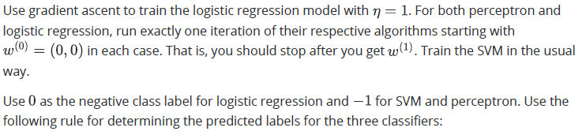
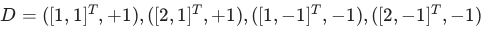
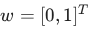
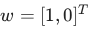
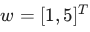
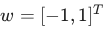

Home / Past papers / MLT End Term / this paper
Machine Learning Indian Institute Of Technology, Madras - Bs In Data Science And Applications Techniques 06 May 26 - 10 May 2026
Elapsed 00:00
Consider a dataset with two data-points for a binary classification problem with features in  .
.  is a data-point from the positive class while
is a data-point from the positive class while  is from the negative class. We now consider three linear classifiers: perceptron, logistic regression and SVM.
is from the negative class. We now consider three linear classifiers: perceptron, logistic regression and SVM.
 is the weight vector with the largest margin, which of the following is true?
is the weight vector with the largest margin, which of the following is true?

. is a data-point from the positive class while is from the negative class. We now consider three linear classifiers: perceptron, logistic regression and SVM.

If is the weight vector with the largest margin, which of the following is true?
- All three classifiers output

- Only SVM outputs
- Only SVM and perceptron output
- Only perceptron and logistic regression output
Consider a dataset in defined as  can correctly separate the two classes using a linear decision boundary? (Select all that apply.)
can correctly separate the two classes using a linear decision boundary? (Select all that apply.)
defined as 
. Which of the following weight vectors can correctly separate the two classes using a linear decision boundary? (Select all that apply.)



Consider a dataset consisting of  datapoints
datapoints  , where each
, where each  . Let the four features be denoted by
. Let the four features be denoted by  and
and  . Suppose the features satisfy the following linear relationship:
. Suppose the features satisfy the following linear relationship:  That is, one of the features is an exact linear combination of others. A linear regression model is trained to predict a target variable
That is, one of the features is an exact linear combination of others. A linear regression model is trained to predict a target variable  using these features. Consider the following statements: Which of the following is (are) true.
using these features. Consider the following statements: Which of the following is (are) true.
datapoints , where each . Let the four features be denoted by and . Suppose the features satisfy the following linear relationship: That is, one of the features is an exact linear combination of others. A linear regression model is trained to predict a target variable using these features. Consider the following statements: Which of the following is (are) true.- Linear regression without regularization will achieve training MSE less than or equal to that of ridge regression.
- The solution for linear regression without regularization may not be unique.
- Ridge regression (L2 regularization) will always set at least one coefficient exactly to zero.
- Lasso regression (L1 regularization) can force some feature weights to become exactly zero.
Consider a binary classification dataset in  that is linearly separable. Suppose there exist two distinct weight vectors
that is linearly separable. Suppose there exist two distinct weight vectors  and
and  that both correctly classify all training points with a positive margin. The Perceptron algorithm is applied to this dataset. Which of the following statements are correct? (Select all that apply.)
that both correctly classify all training points with a positive margin. The Perceptron algorithm is applied to this dataset. Which of the following statements are correct? (Select all that apply.)
that is linearly separable. Suppose there exist two distinct weight vectors and that both correctly classify all training points with a positive margin. The Perceptron algorithm is applied to this dataset. Which of the following statements are correct? (Select all that apply.)- The Perceptron algorithm is guaranteed to converge to .
- The final weight vector obtained by the Perceptron algorithm depends on the initialization and the order in which the data points are presented.
- The Perceptron algorithm is guaranteed to converge to some separating hyperplane in a finite number of updates.
- The Perceptron algorithm always converges to the maximum margin separator among all possible separating hyperplanes.
Consider a hard-margin SVM trained on a linearly separable dataset. The optimal Lagrange multipliers are  . The training dataset
. The training dataset  is given by
is given by  Given the test point
Given the test point  , determine the predicted label
, determine the predicted label  . Enter the answer as either
. Enter the answer as either  or
or 
 The prediction for a test point
The prediction for a test point  is given by
is given by 
. The training dataset is given by Given the test point , determine the predicted label . Enter the answer as either or The prediction for a test point is given by Consider a binary classification problem using logistic regression. The model predicts the probability of class  as:
as:
 A threshold of
A threshold of  is used for classification. The predicted class label is given by:
is used for classification. The predicted class label is given by:
 The values of
The values of  for the following datapoints are:
for the following datapoints are:  How many datapoints will be classified as class ?
How many datapoints will be classified as class ?
as:
A threshold of is used for classification. The predicted class label is given by:
The values of for the following datapoints are: How many datapoints will be classified as class ?A coin is flipped 100 times, and it lands on heads 60 times. You use a Beta(10, 40) prior to estimate the true probability of heads. Given these observations, calculate the posterior mean of the probability of heads. Enter the answer correct to three decimal places.  • Pdf of Beta distribution is
• Pdf of Beta distribution is
 where
where  is the Beta function. • The mean of the Beta distribution is:
is the Beta function. • The mean of the Beta distribution is:  .
.
• Pdf of Beta distribution is
where is the Beta function. • The mean of the Beta distribution is: .Comprehension passage - the questions below it refer to this
Consider the following soft-margin Support Vector Machine (SVM) classifier. The solid line represents the decision boundary  , and the dotted lines represent the margin boundaries
, and the dotted lines represent the margin boundaries  and
and  . Red points correspond to the negative class, and green points correspond to the positive class.
. Red points correspond to the negative class, and green points correspond to the positive class.
 Based on the above data, answer the given subquestions.
Based on the above data, answer the given subquestions.How many datapoints will incur a penalty (i.e., have non-zero slack variables  )?
)?
)?How many datapoints will definitely have  in the dual formulation of SVM?
in the dual formulation of SVM?
in the dual formulation of SVM?Comprehension passage - the questions below it refer to this
Consider the given 2D diagram. The datapoints are slightly exaggerated for better visualization. Red points represent the negative class ( ) and green points represent the positive class ( ). A test point  is shown. Use the K-Nearest Neighbors (KNN) algorithm with
is shown. Use the K-Nearest Neighbors (KNN) algorithm with  .
.
 Based on the above data, answer the given subquestions.
Based on the above data, answer the given subquestions.Using Euclidean distance, what is the predicted class of ?
?- Tie
- Cannot be determined
Which of the following best explains the classification of ?
?- The nearest neighbors are dominated by positive class points.
- The nearest neighbors are dominated by negative class points.
- Positive class points are closer in all directions.
- The classification is determined by majority voting among the nearest neighbors.
Consider the two decision trees shown in the figure.
 Which of the following statements is correct?
Which of the following statements is correct?
Which of the following statements is correct?- Tree 1 has higher information gain than Tree 2
- Tree 2 has higher information gain than Tree 1
- Both trees have equal information gain
- Cannot be determined without further splits
Which of the following statements is correct?
- Bagging reduces variance, Boosting reduces bias
- Bagging reduces bias, Boosting reduces variance
- Both reduce only variance
- Both reduce only bias
Consider the datapoints  with label and
with label and  with label . A hard margin SVM is applied on this dataset. Which of the following is the decision boundary for the above dataset?
with label . A hard margin SVM is applied on this dataset. Which of the following is the decision boundary for the above dataset?
with label and with label . A hard margin SVM is applied on this dataset. Which of the following is the decision boundary for the above dataset?


Consider a dataset , where each  . Principal Component Analysis (PCA) is applied to this dataset and all the five principal components are retained. Which of the following statements is correct?
. Principal Component Analysis (PCA) is applied to this dataset and all the five principal components are retained. Which of the following statements is correct?
, where each . Principal Component Analysis (PCA) is applied to this dataset and all the five principal components are retained. Which of the following statements is correct?- PCA has reduced the dimensionality of the dataset because the combinations of features are de-correlated
- PCA has not reduced the dimensionality of the dataset because all principal components are retained.
- PCA always reduces the dimensionality of the dataset regardless of the number of components retained.
- PCA can never be used for dimensionality reduction.
Consider a regression problem in which we use a neural network with the following architecture: • Input layer has  neurons • Three hidden layers, each with
neurons • Three hidden layers, each with  neurons • Output layer with one neuron Find the total number of parameters in the network. Ignore the biases.
neurons • Output layer with one neuron Find the total number of parameters in the network. Ignore the biases.
neurons • Three hidden layers, each with neurons • Output layer with one neuron Find the total number of parameters in the network. Ignore the biases.Answer key
- Q1 (MCQ, 4 marks): A
- Q2 (MSQ, 4 marks): A, C
- Q3 (MSQ, 4 marks): A, B, D
- Q4 (MSQ, 3 marks): B, C
- Q5 (SA, 4 marks): 1
- Q6 (SA, 4 marks): 1
- Q7 (SA, 4 marks): 0.44 to 0.49
- Q8 (SA, 2 marks): 5
- Q9 (SA, 2 marks): 6
- Q10 (MCQ, 2 marks): B
- Q11 (MSQ, 2 marks): B, D
- Q12 (MCQ, 3 marks): A
- Q13 (MCQ, 3 marks): A
- Q14 (MCQ, 3 marks): B
- Q15 (MCQ, 3 marks): B
- Q16 (SA, 3 marks): 260